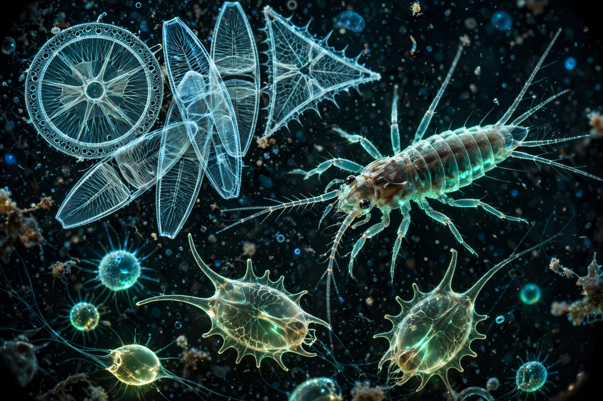

| Definition | Organisms drifting in water, unable to swim against currents |
| Categories | Phytoplankton, zooplankton, bacterioplankton |
| Size range | Micrometres to over 1 metre (jellyfish) |
| Habitat | Oceans, seas and freshwater bodies |

Plankton are the diverse collection of organisms found in water that are unable to propel themselves against a current and therefore drift wherever the water takes them. The name comes from the Greek planktos, meaning "drifter" or "wanderer". Plankton form the base of most aquatic food webs and play a planetary role in oxygen production and carbon cycling.
Phytoplankton are photosynthetic — mainly diatoms, dinoflagellates, cyanobacteria and coccolithophores. They live in the sunlit surface layer, generate an estimated half of Earth's oxygen, and fix vast quantities of carbon dioxide. Zooplankton are animals and animal-like protists that feed on phytoplankton or each other; they include copepods, krill, foraminifera, and the larval stages of fish, crabs and molluscs — many are only temporarily planktonic (meroplankton) before settling as adults. Bacterioplankton and virioplankton dominate by number and drive nutrient recycling through the microbial loop.
Plankton are grouped by size from femtoplankton (viruses, <0.2 µm) through picoplankton and nanoplankton to microplankton (20–200 µm, including most diatoms), mesoplankton (0.2–20 mm, e.g. copepods) and megaplankton such as large jellyfish.
Many zooplankton perform diel vertical migration — rising to feed at night and sinking by day — the largest synchronised movement of biomass on Earth. Seasonal phytoplankton blooms, triggered by light and nutrients, support fisheries and seabird colonies. Whale faeces, iron availability and ocean stratification all regulate plankton productivity; shifts in plankton communities are a key indicator of climate change. Some dinoflagellate blooms are harmful ("red tides"), producing toxins that accumulate in shellfish.